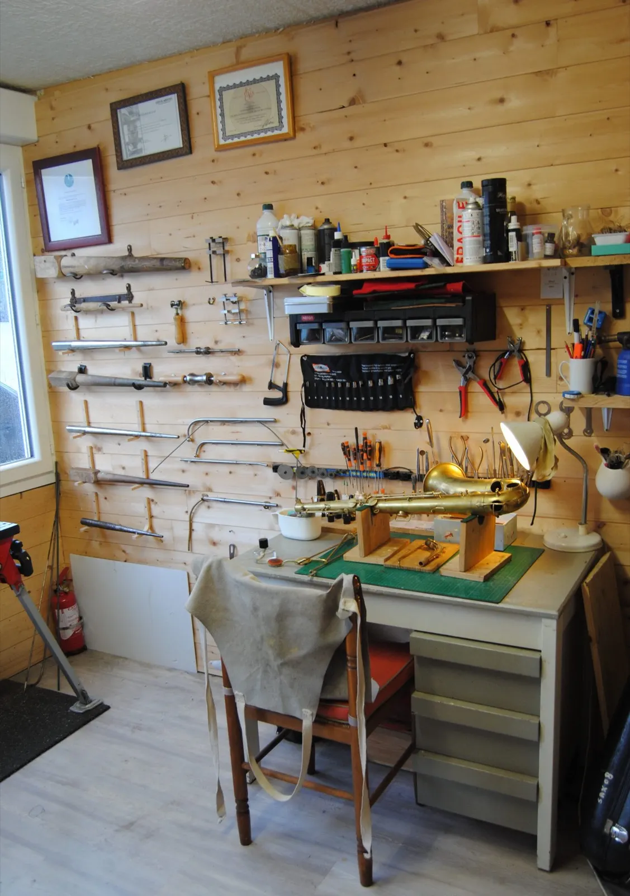
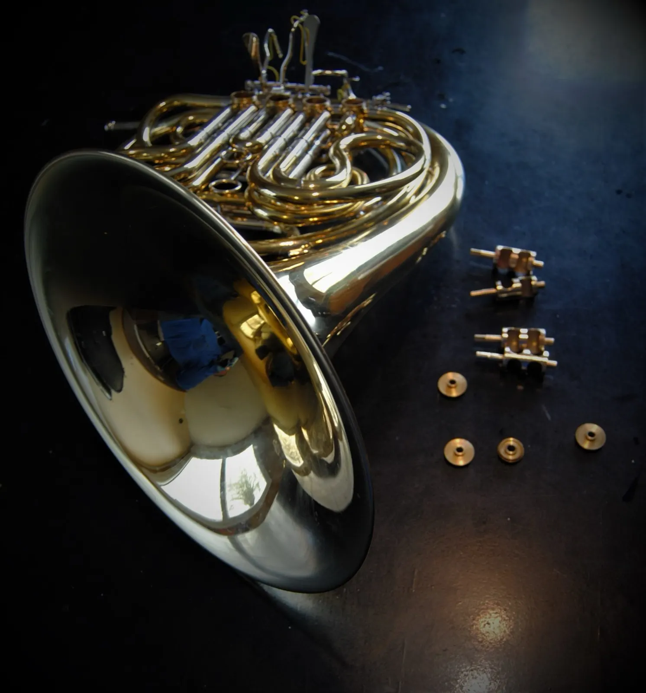
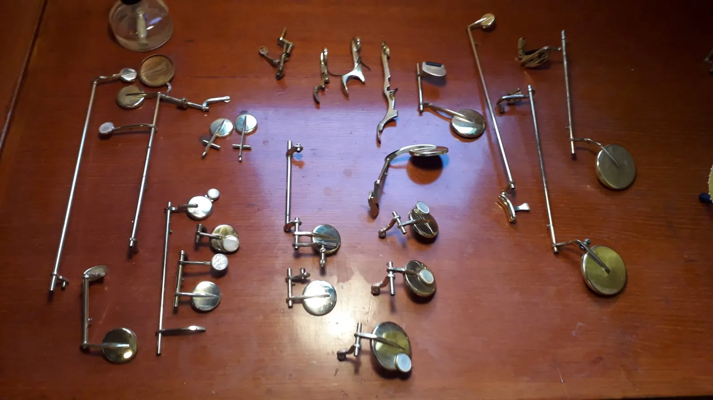
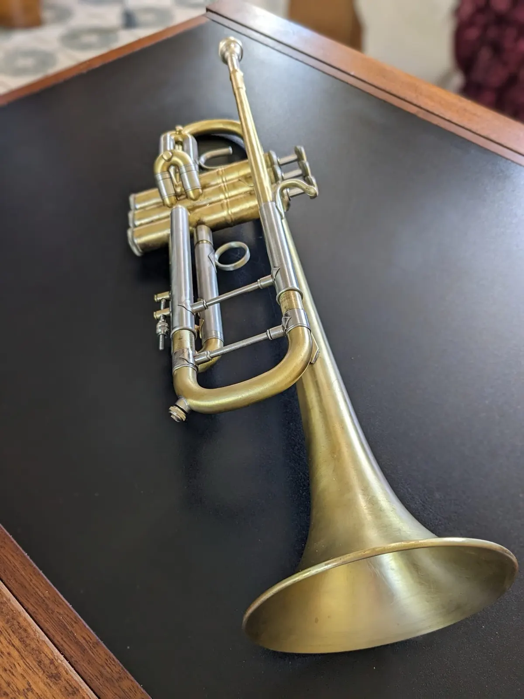
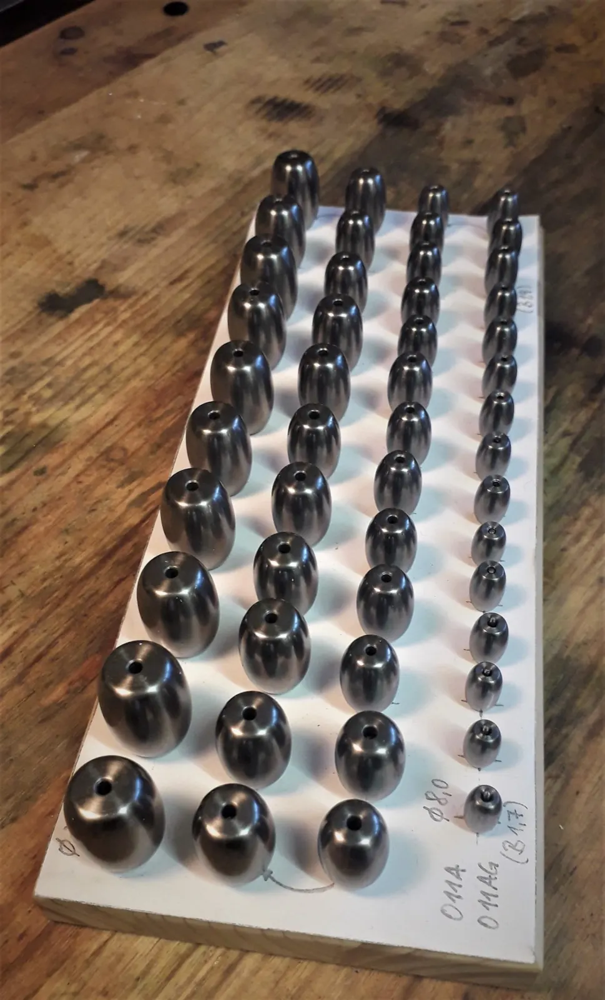
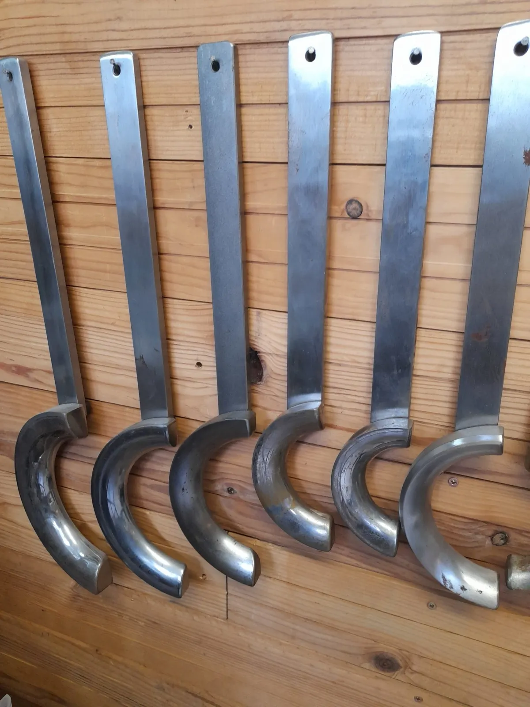
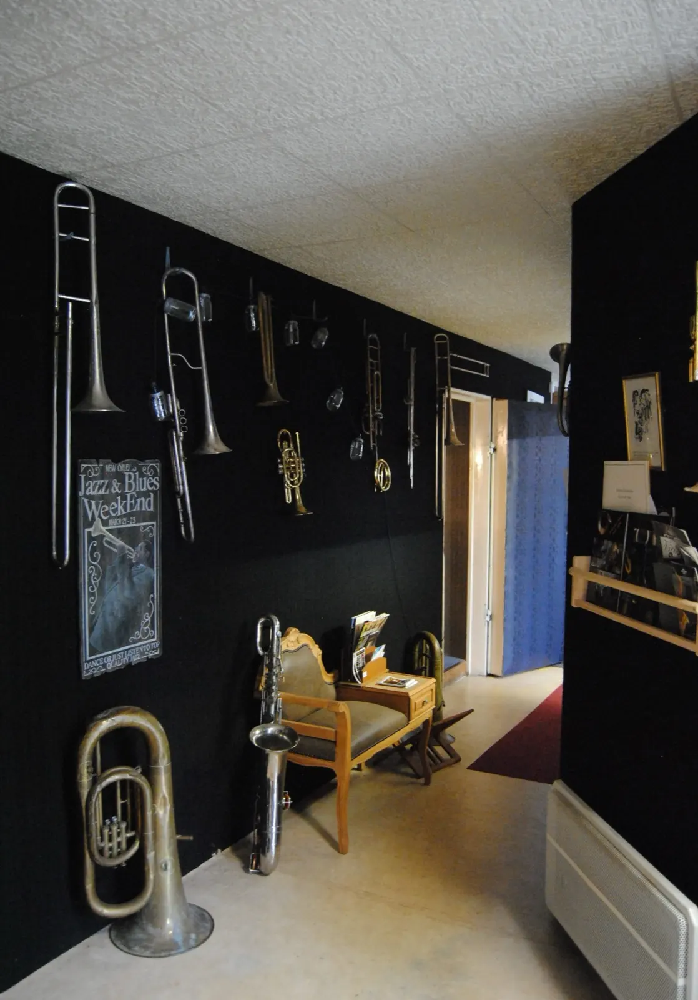
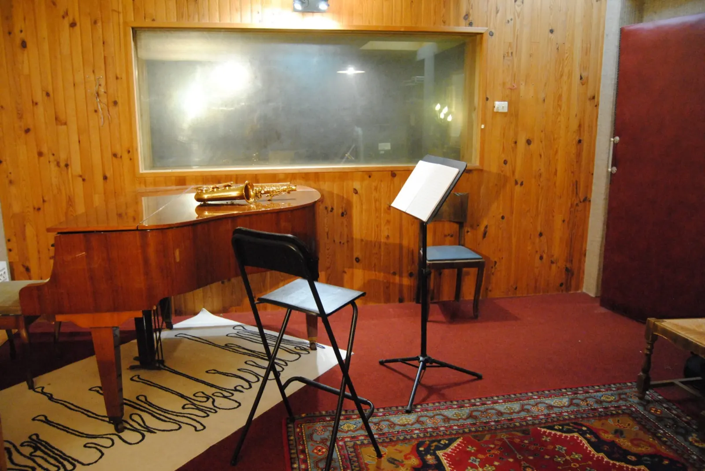

Votre luthier des vents, au cœur de Brest.
Trompettes, trombones, tubas, saxophones, clarinettes, flûtes : des instruments neufs et d'occasion, l'entretien et la réparation des cuivres et des bois, et trois cabines insonorisées pour tout essayer sur place.
2, rue Paul Fort, Brest · parking gratuit, accès facile

Atelier de réparation
- Instruments neufs et d'occasion
- 3 cabines d'essai insonorisées
- Garanties de 2 à 5 ans
- Location dès 25 €
- Parking gratuit


L'entretien, une fois par an.
Pistons, cylindres, mécaniques, coulisses et visserie s'encrassent : le jeu devient plus dur, les blocages fréquents. Cuivres, clarinettes et saxophones sont les bienvenus à l'atelier pour un nettoyage complet et les réglages nécessaires, faits avec le plus grand soin.
- Les bainsDes bains spécifiques, pour instruments vernis ou argentés.
- La désoxydationTubes, pistons, branches, valves, coulisses, axes, leviers.
- L'huilageDes mécaniques et des instruments en bois, clarinettes et flûtes.
- Les piècesSi nécessaire : feutres, lièges, tampons de saxophones, flûtes et clarinettes, ressorts.
Après un choc
Quand une chute ou un choc demande plus qu'un entretien : réparation, rééquilibrage et restauration de l'instrument.
Relooking
Brossage, patines et personnalisation de vos instruments.
Conseil et expertise : un premier avis avant même de venir.
Avant de vous déplacer jusqu'à Brest, contactez l'atelier par téléphone ou par mail et envoyez quelques photos de votre instrument.
-
1
Quelques photos
Par mail à contact@atelier-des-cuivres.com, ou par téléphone au 06 07 56 42 52 : un premier avis sur l'état de l'instrument.
-
2
Un devis gratuit
Lors de votre venue à l'atelier, un devis gratuit et adapté à votre instrument vous est proposé.
-
3
À l'établi
Entretien, réparation, rééquilibrage ou restauration : l'instrument est pris en main à l'atelier, à Brest.


« Votre instrument de musique a besoin de soins réguliers pour conserver toutes ses qualités. »
Garanties de 2 à 5 ans sans supplément sur les instruments vendus, et un SAV assuré à l'atelier, ce qui n'est pas toujours possible avec les boutiques en ligne.Les cours de la Brass Academy
Des cours particuliers de trompette, trombone, tuba et jazz, pour tous les niveaux et tous les publics, avec des professeurs diplômés d'État et certifiés. Débutants, intermédiaires ou avancés : les séances, entièrement personnalisées pour l'enfant comme pour l'adulte, tiennent compte du projet du musicien, avec ou sans solfège.
- Trompette, cornet, bugle
- Trombone
- Euphonium, saxhorn
- Tuba
- Improvisation
- Orchestration et arrangements
- Jazz, du New Orleans au Be Bop
30 ans d'expérience pédagogique et scénique.

L'accueil et ses instruments anciens« Le magasin de musique le plus atypique de l'ouest. »
Ainsi a été baptisé l'atelier : un accueil avec une exposition d'instruments anciens, du mobilier, un showroom. On y trouve un large choix d'instruments à vent neufs et d'occasion, de nombreuses marques, et les accessoires : becs, embouchures, ligatures.
- Essai sur placeStock permanent, tous les instruments s'essaient en cabine.
- Garanties de 2 à 5 ansSans supplément.
- Paiement en plusieurs foisSans frais.
- Location dès 25 €Clarinette, flûte, saxophone, trompette, trombone…
- Location-venteVous choisissez vous-même la durée des loyers.
- SAV garantiAssuré par l'atelier.
Bienvenue à l'atelier.
Les horaires d'ouverture sont tenus à jour sur Google. Sinon, n'hésitez pas à prendre rendez-vous.

Une des trois cabines d'essai- Adresse
- 2, rue Paul Fort
29200 Brest
Parking gratuit, accès facile. - Téléphones
- 02 98 25 80 67
06 07 56 42 52 - contact@atelier-des-cuivres.com
- Ailleurs
- Formulaire de contact · Facebook · YouTube